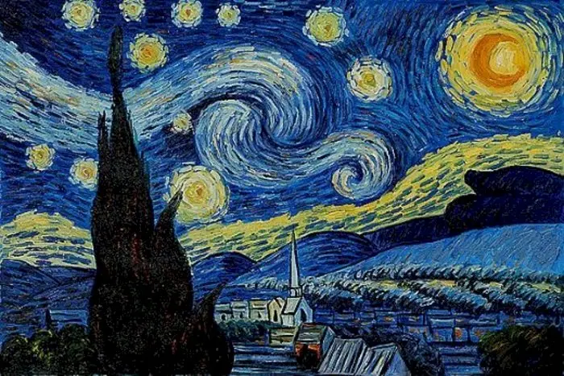
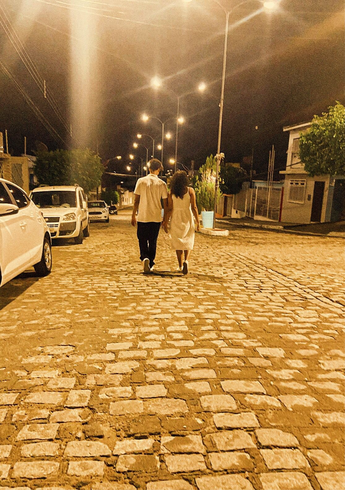

Carta Aberta
Olhe, Karen Rayssa! Eu não gosto quando a gente fica assim nesse clima chato tá, mas em relacionamentos saudáveis as conversas difícieis são necessárias. Eu não curto ver a pessoas que eu amo assim, triste, mal e pensativa. Ainda mais em um fim de semana especial como esse né.
Sendo assim eu quero te garantir que tudo vai ficar bem (tu mandou mesagem, vou responder). No momento que eu to digitando isso, to escutando "505" - era so um detalhezinho mesmo. Voltando... você é uma das pessosa mais importantes da minha vida e eu não quero te ver assim. Tu me mostrou muitas coisas nesses últimos meses e me fez sentir coisas que eu nunca mais tinha sentido. Então vamos ficar SUUUUUPER BEM tá e sempre conte comigo pra tudo, independente das circunstâncias. Eu sempre vou esté bem aqui do seu lado pra qualquer coisa. Nunca pense que eu vou omitir nada de ti até porque isso não se faz com a pessoa que tu quer pra vida. Nunca vou esconder nada de ti, da menor a maior escala. E saiba que até quando Deus quiser eu vou estar sempre aqui. Saiba que quem tá do seu lado é um cara que te ama de verdade.
To escrevendo esse parágrafo agora porque eu te disse que tu ia ficar bem e você tá muito bem e linda (como sempre né). É assim que eu quero te ver pra sempre tá, indepentende de qualquer coisa, tu tem o sorriso muito lindo e eu adoro ver ele estampado no seu rosto. É uma das coisas mais belas que eu já vi em toda a minha vida (Nesse exato momento tu soltou uma piada com Rexona kakaka). Ta vendo, amor? é assim que tu merece ficar, você é uma garora incrível e não merece sofrer. Espero que tu volte melhor e também que tenha desgustado essa sua coxinha bem totosa.
Espero que tu lembre pra sempre desses pequenos sites que eu fiz pra ti. É uma forma de mimo pra ti e eu gosto de fazer isso.
O amor é eterno - a sua manifestação pode modificar-se, mas nunca a sua essência...
Vincent van Gogh
Eu te amo muito tá, de verdade mesmo e vamos melhorar sempre como parceiros. 151899